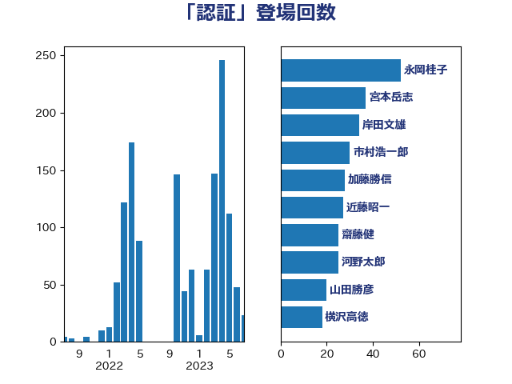

単語「認証」

| 永岡桂子 | 自由民主党 | 52 回 |
| 宮本岳志 | 日本共産党 | 37 回 |
| 岸田文雄 | 自由民主党 | 34 回 |
| 市村浩一郎 | 日本維新の会 | 30 回 |
| 加藤勝信 | 自由民主党 | 28 回 |
| 近藤昭一 | 立憲民主党 | 27 回 |
| 齋藤健 | 自由民主党 | 25 回 |
| 河野太郎 | 自由民主党 | 25 回 |
| 山田勝彦 | 立憲民主党 | 20 回 |
| 横沢高徳 | 立憲民主党 | 18 回 |
| 山際大志郎 | 自由民主党 | 18 回 |
| 長友慎治 | 国民民主党 | 17 回 |
| 下野六太 | 公明党 | 16 回 |
| 遠藤良太 | 日本維新の会 | 14 回 |
| 田村まみ | 国民民主党 | 14 回 |
| 西村康稔 | 自由民主党 | 13 回 |
| 宮本徹 | 日本共産党 | 12 回 |
| 倉林明子 | 日本共産党 | 12 回 |
| 浜地雅一 | 公明党 | 11 回 |
| 鈴木義弘 | 国民民主党 | 10 回 |
| 梅村みずほ | 日本維新の会 | 10 回 |
| 塩川鉄也 | 日本共産党 | 10 回 |
| 須藤元気 | 無所属 | 9 回 |
| 簗和生 | 自由民主党 | 9 回 |
| 松本剛明 | 自由民主党 | 9 回 |
| 平木大作 | 公明党 | 9 回 |
| 川合孝典 | 国民民主党 | 9 回 |
| 堀場幸子 | 日本維新の会 | 9 回 |
| 輿水恵一 | 公明党 | 8 回 |
| 稲津久 | 公明党 | 8 回 |
| 田中昌史 | 自由民主党 | 8 回 |
| 小西洋之 | 立憲民主党 | 8 回 |
| 伊佐進一 | 公明党 | 8 回 |
| 野村哲郎 | 自由民主党 | 7 回 |
| 浜田聡 | NHK党 | 7 回 |
| 山田太郎 | 自由民主党 | 7 回 |
| 階猛 | 立憲民主党 | 6 回 |
| 谷合正明 | 公明党 | 6 回 |
| 角田秀穂 | 公明党 | 6 回 |
| 柚木道義 | 立憲民主党 | 6 回 |
| 有村治子 | 自由民主党 | 6 回 |
| 斉藤鉄夫 | 公明党 | 6 回 |
| 後藤茂之 | 自由民主党 | 6 回 |
| 山下芳生 | 日本共産党 | 6 回 |
| 坂本祐之輔 | 立憲民主党 | 6 回 |
| 吉田とも代 | 日本維新の会 | 6 回 |
| 長谷川英晴 | 自由民主党 | 5 回 |
| 金城泰邦 | 公明党 | 5 回 |
| 野中厚 | 自由民主党 | 5 回 |
| 葉梨康弘 | 自由民主党 | 5 回 |
| 松野明美 | 日本維新の会 | 5 回 |
| 平沼正二郎 | 自由民主党 | 5 回 |
| 平林晃 | 公明党 | 5 回 |
| 大島敦 | 立憲民主党 | 5 回 |
| 仁木博文 | 無所属 | 5 回 |
| 金村龍那 | 日本維新の会 | 4 回 |
| 萩生田光一 | 自由民主党 | 4 回 |
| 緑川貴士 | 立憲民主党 | 4 回 |
| 石川大我 | 立憲民主党 | 4 回 |
| 田名部匡代 | 立憲民主党 | 4 回 |
| 杉本和巳 | 日本維新の会 | 4 回 |
| 大塚耕平 | 国民民主党 | 4 回 |
| 塩崎彰久 | 自由民主党 | 4 回 |
| 勝俣孝明 | 自由民主党 | 4 回 |
| 住吉寛紀 | 日本維新の会 | 4 回 |
| 中田宏 | 自由民主党 | 4 回 |
| 高橋千鶴子 | 日本共産党 | 3 回 |
| 石川博崇 | 公明党 | 3 回 |
| 石垣のりこ | 立憲民主党 | 3 回 |
| 石井啓一 | 公明党 | 3 回 |
| 泉田裕彦 | 自由民主党 | 3 回 |
| 沢田良 | 日本維新の会 | 3 回 |
| 池畑浩太朗 | 日本維新の会 | 3 回 |
| 池下卓 | 日本維新の会 | 3 回 |
| 森山浩行 | 立憲民主党 | 3 回 |
| 川田龍平 | 立憲民主党 | 3 回 |
| 山岸一生 | 立憲民主党 | 3 回 |
| 小野田紀美 | 自由民主党 | 3 回 |
| 小熊慎司 | 立憲民主党 | 3 回 |
| 伊藤岳 | 日本共産党 | 3 回 |
| 中川貴元 | 自由民主党 | 3 回 |
| 上田勇 | 公明党 | 3 回 |
| たがや亮 | れいわ新選組 | 3 回 |
| 金子道仁 | 日本維新の会 | 2 回 |
| 野間健 | 立憲民主党 | 2 回 |
| 西村智奈美 | 立憲民主党 | 2 回 |
| 藤木眞也 | 自由民主党 | 2 回 |
| 若松謙維 | 公明党 | 2 回 |
| 笠井亮 | 日本共産党 | 2 回 |
| 穂坂泰 | 自由民主党 | 2 回 |
| 秋本真利 | 無所属 | 2 回 |
| 白石洋一 | 立憲民主党 | 2 回 |
| 林芳正 | 自由民主党 | 2 回 |
| 松本尚 | 自由民主党 | 2 回 |
| 松原仁 | 立憲民主党 | 2 回 |
| 杉尾秀哉 | 立憲民主党 | 2 回 |
| 末次精一 | 立憲民主党 | 2 回 |
| 星北斗 | 自由民主党 | 2 回 |
| 斎藤洋明 | 自由民主党 | 2 回 |
| 岸真紀子 | 立憲民主党 | 2 回 |
| 山添拓 | 日本共産党 | 2 回 |
| 小森卓郎 | 自由民主党 | 2 回 |
| 小川淳也 | 立憲民主党 | 2 回 |
| 寺田学 | 立憲民主党 | 2 回 |
| 安江伸夫 | 公明党 | 2 回 |
| 國場幸之助 | 自由民主党 | 2 回 |
| 北神圭朗 | 無所属 | 2 回 |
| 務台俊介 | 自由民主党 | 2 回 |
| 加藤明良 | 自由民主党 | 2 回 |
| 井原巧 | 自由民主党 | 2 回 |
| 串田誠一 | 日本維新の会 | 2 回 |
| 三浦信祐 | 公明党 | 2 回 |
| 高橋英明 | 日本維新の会 | 1 回 |
| 高木真理 | 立憲民主党 | 1 回 |
| 高市早苗 | 自由民主党 | 1 回 |
| 青木愛 | 立憲民主党 | 1 回 |
| 阿部弘樹 | 日本維新の会 | 1 回 |
| 阿部司 | 日本維新の会 | 1 回 |
| 長谷川淳二 | 自由民主党 | 1 回 |
| 金子恵美 | 立憲民主党 | 1 回 |
| 金子恭之 | 自由民主党 | 1 回 |
| 谷公一 | 自由民主党 | 1 回 |
| 西野太亮 | 自由民主党 | 1 回 |
| 蓮舫 | 立憲民主党 | 1 回 |
| 若宮健嗣 | 自由民主党 | 1 回 |
| 芳賀道也 | 国民民主党 | 1 回 |
| 舟山康江 | 国民民主党 | 1 回 |
| 自見はなこ | 自由民主党 | 1 回 |
| 羽田次郎 | 立憲民主党 | 1 回 |
| 窪田哲也 | 公明党 | 1 回 |
| 空本誠喜 | 日本維新の会 | 1 回 |
| 福田昭夫 | 立憲民主党 | 1 回 |
| 神谷裕 | 立憲民主党 | 1 回 |
| 石橋通宏 | 立憲民主党 | 1 回 |
| 矢倉克夫 | 公明党 | 1 回 |
| 畦元将吾 | 自由民主党 | 1 回 |
| 田村智子 | 日本共産党 | 1 回 |
| 田中健 | 国民民主党 | 1 回 |
| 玄葉光一郎 | 立憲民主党 | 1 回 |
| 牧山ひろえ | 立憲民主党 | 1 回 |
| 渡辺創 | 立憲民主党 | 1 回 |
| 浦野靖人 | 日本維新の会 | 1 回 |
| 浅野哲 | 国民民主党 | 1 回 |
| 河西宏一 | 公明党 | 1 回 |
| 比嘉奈津美 | 自由民主党 | 1 回 |
| 武部新 | 自由民主党 | 1 回 |
| 櫻井周 | 立憲民主党 | 1 回 |
| 柳本顕 | 自由民主党 | 1 回 |
| 柳ヶ瀬裕文 | 日本維新の会 | 1 回 |
| 松野博一 | 自由民主党 | 1 回 |
| 東徹 | 日本維新の会 | 1 回 |
| 杉田水脈 | 自由民主党 | 1 回 |
| 杉久武 | 公明党 | 1 回 |
| 本田顕子 | 自由民主党 | 1 回 |
| 末松信介 | 自由民主党 | 1 回 |
| 日下正喜 | 公明党 | 1 回 |
| 新妻秀規 | 公明党 | 1 回 |
| 斎藤アレックス | 国民民主党 | 1 回 |
| 掘井健智 | 日本維新の会 | 1 回 |
| 徳永エリ | 立憲民主党 | 1 回 |
| 川崎ひでと | 自由民主党 | 1 回 |
| 島村大 | 自由民主党 | 1 回 |
| 山本博司 | 公明党 | 1 回 |
| 山下貴司 | 自由民主党 | 1 回 |
| 小野泰輔 | 日本維新の会 | 1 回 |
| 太田房江 | 自由民主党 | 1 回 |
| 天畠大輔 | れいわ新選組 | 1 回 |
| 大岡敏孝 | 自由民主党 | 1 回 |
| 大串正樹 | 自由民主党 | 1 回 |
| 和田義明 | 自由民主党 | 1 回 |
| 吉田宣弘 | 公明党 | 1 回 |
| 古川禎久 | 自由民主党 | 1 回 |
| 伊藤忠彦 | 自由民主党 | 1 回 |
| 伊藤孝恵 | 国民民主党 | 1 回 |
| 中谷真一 | 自由民主党 | 1 回 |
| 中村裕之 | 自由民主党 | 1 回 |
| 三宅伸吾 | 自由民主党 | 1 回 |
| おおつき紅葉 | 立憲民主党 | 1 回 |